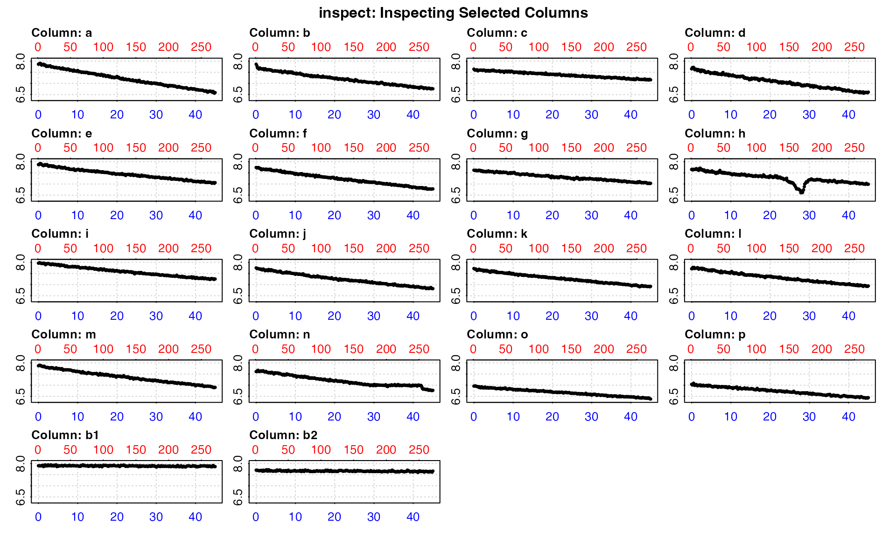
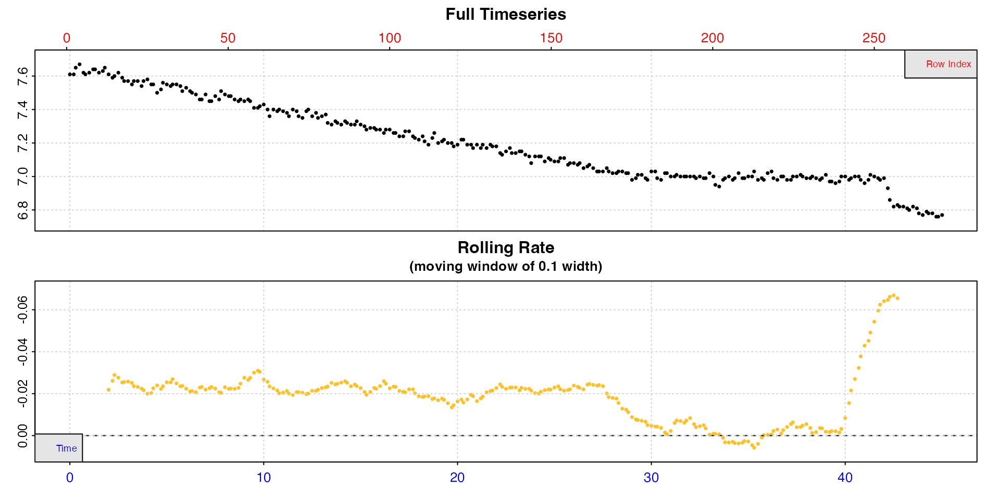
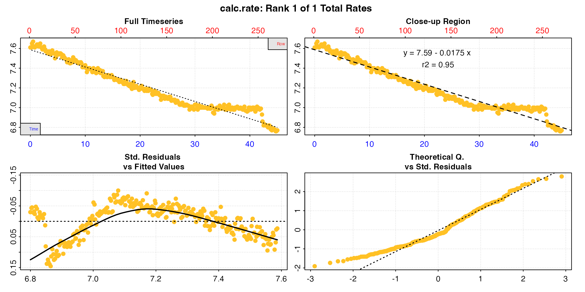
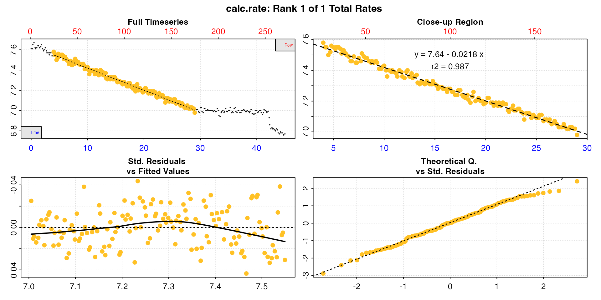
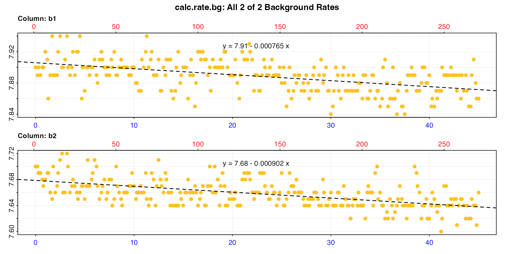

Here we describe a typical workflow for a closed-chamber respirometry
experiment. Whether or not this is the type of experiment you are
conducting, this is a good starting point to understand the general
respR workflow, functions and how they work together.
The example data used here is urchins.rd, where the
first column of the data frame is time data in minutes, while
the remaining 18 columns are dissolved oxygen data in mg/L.
Columns 18 and 19 (b1 and b2) contain
background recordings (i.e. from empty or “blank” control chambers).
head(urchins.rd)
#> time.min a b c d e f g h i j k l m n o p b1 b2
#> <num> <num> <num> <num> <num> <num> <num> <num> <num> <num> <num> <num> <num> <num> <num> <num> <num> <num> <num>
#> 1: 0.0 7.86 7.86 7.64 7.65 7.87 7.74 7.62 7.65 7.96 7.75 7.72 7.71 7.87 7.61 6.96 7.04 7.90 7.70
#> 2: 0.2 7.87 7.79 7.60 7.71 7.87 7.72 7.61 7.66 7.97 7.72 7.71 7.71 7.89 7.61 6.96 7.01 7.89 7.70
#> 3: 0.3 7.89 7.70 7.60 7.70 7.90 7.72 7.61 7.63 7.98 7.72 7.69 7.77 7.89 7.65 6.97 7.05 7.90 7.69
#> 4: 0.5 7.90 7.68 7.60 7.72 7.92 7.74 7.62 7.66 7.97 7.72 7.70 7.77 7.89 7.67 6.96 7.09 7.89 7.69
#> 5: 0.7 7.87 7.64 7.60 7.67 7.90 7.73 7.59 7.65 7.95 7.71 7.66 7.76 7.86 7.62 6.95 7.00 7.90 7.68
#> 6: 0.8 7.82 7.69 7.61 7.61 7.88 7.70 7.60 7.65 7.94 7.70 7.63 7.72 7.86 7.61 6.94 6.99 7.90 7.67The typical workflow in respR is to process a data frame
containing paired values of numeric time and oxygen through several
functions, saving the output object each time and inputting it into the
next function. Much of this is optional; most respR
functions also accept numeric values, vectors and
data.frame objects, depending on the input or function.
However, the object-oriented
approach allows for several benefits, such as data integrity checks and
reducing the need for additional inputs, and we would strongly recommend
using it whenever possible.
A typical workflow involves some or all of the following functions:
inspect() |
Visualise the data and check it for common issues |
calc_rate() or auto_rate()
|
Extract rates from the entire dataset or regions of it, manually or automatically |
adjust_rate() |
Adjust the rate values for background oxygen consumption or production |
convert_rate() |
Convert the adjusted rate(s) to any common units of oxygen consumption or production |
select_rate() |
If there are multiple rates, select according to various criteria which to report or how to arrive at a final rate |
respR has a very simple structural data requirement:
data must be in the form of paired values of numeric time and oxygen
amount in a data.frame. To our knowledge, all oxygen
sensing equipment or probe systems output to formats
(e.g. .csv, .txt) that can be imported into
this structure in R using generic functions such as
read.csv().
See vignette("importing") for a guide to importing and
preparing data to this form.
inspect - visualise and check for errors
Once data is in the form of a data.frame of paired time
and oxygen values, we use inspect() to visualise the data
and to check for common issues:
Time and oxygen columns are numeric
Time and oxygen data contain infinite (Inf)
values
Time and oxygen have missing
(NA/NaN) values
Time data are sequential
Time data contains duplicates
Time data are numerically evenly-spaced
See vignette("inspecting") for a full description and
examples of what these checks entail, the implications of them failing
or producing warnings, and other inputs in the function.
By default, inspect assumes the first column of the data
frame is time, while the second column is
oxygen. However, we can use the time and
oxygen inputs to select different columns, including
multiple columns. You can use either numbers or the names of the
columns. Here, we inspect all columns without <-
assigning (i.e. saving) the result.
inspect(urchins.rd, time = 1, oxygen = 2:19)
#> inspect: Multiple 'oxygen' columns selected. Note that subsequent functions in respR will by default use first oxygen column only.
#> Warning: inspect: Time values are not evenly-spaced (numerically).
#> inspect: Data issues detected. For more information use print().
#>
#> # print.inspect # -----------------------
#> time.min a b c d e f g h i j k l m n o p b1 b2
#> numeric pass pass pass pass pass pass pass pass pass pass pass pass pass pass pass pass pass pass pass
#> Inf/-Inf pass pass pass pass pass pass pass pass pass pass pass pass pass pass pass pass pass pass pass
#> NA/NaN pass pass pass pass pass pass pass pass pass pass pass pass pass pass pass pass pass pass pass
#> sequential pass - - - - - - - - - - - - - - - - - -
#> duplicated pass - - - - - - - - - - - - - - - - - -
#> evenly-spaced WARN - - - - - - - - - - - - - - - - - -
#>
#> Uneven Time data locations (first 20 shown) in column: time.min
#> [1] 1 2 3 4 5 6 7 8 9 10 11 12 13 14 15 16 17 18 19 20
#> Minimum and Maximum intervals in uneven Time data:
#> [1] 0.1 0.2
#> -----------------------------------------This is chiefly exploratory functionality to allow for a quick overview of a dataset. Here the plot lets us see which are the specimen columns, which might have data anomalies, and which are controls.
The data checks tell us all the columns pass the various checks,
except one. There is a warning that the time data are not evenly spaced.
This is a common warning, and in this case can be safely ignored. It
results from using decimalised minutes as the time metric, which happen
to be numerically unevenly spaced, but are perfectly usable as the time
metric in respR.
Rather than make assumptions that rows represent evenly spaced
datapoints, the functions in respR use actual time values
for analyses and rate calculations, and so even irregularly spaced data
are analysed correctly. Such warnings are for informative purposes: to
make the user aware of unusual data gaps, and also to remind users that
if they use row numbers for manual operations such as subsetting, the
same row width in different parts of the data may not necessarily
represent the same time period.
To extract rates, it is best to assign each time-oxygen column pair
individually as a separate inspect object. Using the
time and oxygen inputs we can select
particular columns either by the column number or, as shown here, by
name.
urchin <- inspect(urchins.rd, time = "time.min", oxygen = "n")
#>
#> # print.inspect # -----------------------
#> time.min n
#> numeric pass pass
#> Inf/-Inf pass pass
#> NA/NaN pass pass
#> sequential pass -
#> duplicated pass -
#> evenly-spaced WARN -
#>
#> Uneven Time data locations (first 20 shown) in column: time.min
#> [1] 1 2 3 4 5 6 7 8 9 10 11 12 13 14 15 16 17 18 19 20
#> Minimum and Maximum intervals in uneven Time data:
#> [1] 0.1 0.2
#> -----------------------------------------Note how the data is plotted against both time (bottom blue axis) and row index (top red axis). From this plot, we can see irregularities in these data near the end of the timeseries (in this case the specimen had interfered with the oxygen sensor). A linear regression across the entire data series would therefore not be a representative estimate of the true routine respiration rate. However, the bottom plot, a rolling rate across a moving window of 10% of the data, shows that over the initial stages of the experiment oxygen uptake rate is consistent at around -0.02. In this experiment this region would be therefore be suitable for extracting rates, and we would not want to use any data after approximately the 29 minutes timepoint.
For now, the data is saved as an object, urchin which
contains the original data columns we selected coerced into a new data
frame, and various other metadata.
Again, note that using inspect() is optional. Functions
in respR will generally accept regular R data
structures (e.g. data frames, tibbles, vectors, etc.).
inspect() is a quality control and exploratory step that
helps highlight potential issues about the data before analysis. We use
this particular example with an obvious anomaly to illustrate the point
that you should always visualise and explore your data before
analysis. respR has been designed to make this
straightforward.
calc_rate - calculate oxygen uptake rate
Using the inspect object urchin that we
just created in calc_rate() with no additional inputs, will
prompt the function to perform a linear regression on the entire data
series.
calc_rate(urchin)
#>
#> # print.calc_rate # ---------------------
#> Rank 1 of 1 rates:
#> Rate: -0.0175
#>
#> To see full results use summary().
#> -----------------------------------------
Note how the function recognises the inspect() object,
with no other inputs necessary. Alternatively, you can input a
data.frame object containing raw data, in which case the
function will automatically consider the first column as time data, and
the second column as oxygen data (if they are not in the first two
columns, they should be processed via inspect() or
otherwise put into this structure).
In many cases, we want to select the region over which the rate is
determined. For example, we may want to exclude initial stages of
instability at the start of an experiment, determine the rate over an
exact time duration, or within a threshold of oxygen concentrations.
Equipment interference or other factors may cause irregularities in the
data we want to exclude. calc_rate allows us to specify
exact data regions and allow us to work around such issues.
Using the from, to, and by
inputs, a user may use calc_rate() to specify data ranges
in several ways:
from = 4, to = 29, by = "time"from = 7.5, to = 7.0, by = "oxygen"from = 11, to = 273, by = "row"These inputs do not need to be overly precise; for
oxygen and time if input values do not match
exactly to a value in the data, the function will identify the closest
matching values and use these for calculations. Similarly, if
from or to values are beyond the maximum or
minimum values in the data, the function will use the maximum or minimum
value instead. For example, the above experiment is 45 minutes long. If
we used to = 60 as the upper time range, the function would
simply apply a to value of 45 instead.
Here, to calculate our rate we’ll select a 25 minute period before the interference occurred.
urch_rate <- calc_rate(urchin, from = 4, to = 29, by = "time")Plotting the output provides a series of diagnostic plots of the data subset that was analysed.
plot(urch_rate)
#>
#> # plot.calc_rate # ----------------------
#> plot.calc_rate: Plotting rate from position 1 of 1 ...
#> -----------------------------------------
The saved object can also be explored using generic S3 R
methods.
print(urch_rate)
#>
#> # print.calc_rate # ---------------------
#> Rank 1 of 1 rates:
#> Rate: -0.0218
#>
#> To see full results use summary().
#> -----------------------------------------
summary(urch_rate)
#>
#> # summary.calc_rate # -------------------
#> Summary of all rate results:
#>
#> rep rank intercept_b0 slope_b1 rsq row endrow time endtime oxy endoxy rate.2pt rate
#> 1: NA 1 7.64 -0.0218 0.987 25 175 4 29 7.58 6.98 -0.024 -0.0218
#> -----------------------------------------The rate, which at this stage is unitless, can be seen as the final
column, and other summary data and model coefficients are saved in the
object. In this case the rsq is 0.99, so this appears to be
a very good estimate of this urchin’s routine respiration rate.
Note how the rate value is negative. In respR
oxygen uptake rates are represented by negative values because they
represent a negative slope of oxygen against time. By contrast, oxygen
production rates would be positive. These uptake rates will
typically be reported as positive values when you come to write-up the
results.
The output also includes a rate.2pt. This is the rate
determined by simple two-point calculation of difference in oxygen
divided by difference in time. For almost all analyses, the
$rate should be used. See vignette("twopoint")
for an explanation of this output and when it might be useful.
calc_rate.bg - calculate background oxygen
The presence of micro-organisms and their oxygen use may be a potential source of experimental bias, and we usually want to account for background respiration rates during experiments by conducting empty or “blank” control experiments with no specimens to quantify it.
These control experiments are routinely conducted alongside, or before and after specimen experiments, or at an entirely different time. Whenever they are conducted, it is always important they are done under the exact same conditions using the same or equivalent equipment. Essentially these should be identical to regular experiments, except for the absence of the specimen you are interested in.
Since the oxygen signal from blank experiments can be noisy and
trends easily influenced by outliers, often the background rates from
several controls are averaged to obtain a more accurate estimate of the
background rate. Once a background rate is determined, specimen rates
are then adjusted by it. See vignette("adjust_rate") for
detailed examples of the many types of adjustments that can be performed
using respR.
The function calc_rate.bg() is used to extract
background rates from control recordings. These must share the
same units of time and oxygen as the experimental rates
they will be used to adjust. It can also process multiple background
oxygen recordings, so that an average background rate will be applied in
the adjust_rate function, or other adjustments requiring
multiple recordings can be performed. In the urchins.rd
data, background respiration was recorded and saved in columns 18 and
19.
We will determine background rates using calc_rate.bg().
Unlike calc_rate, which can calculate rates from
multiple regions of a single oxygen column, this
function can calculate rates across single region of
multiple columns.
Here, we inspect the two data columns, and because they
have no anomalies use the entire data to calculate a background rate (if
we wanted to only use part of it we could pass it through
subset_data() first). We save the output as a separate
object.
bg_insp <- inspect(urchins.rd, time = 1, oxygen = 18:19)
bg_rate <- calc_rate.bg(bg_insp)
#>
#> # print.calc_rate.bg # ------------------
#> Background rate(s):
#> [1] -0.000765 -0.000902
#> Mean background rate:
#> [1] -0.000833
#> -----------------------------------------The bg_rate object contains both individual background
rates for each data column ($rate.bg), and an averaged rate
($rate.bg.mean). We will determine how these are applied as
an adjustment to the specimen rate in adjust_rate().
adjust_rate - adjust for background respiration
See vignette("adjust_rate") for detailed examples of the
types of adjustments that can be performed using
adjust_rate. Here the adjustment is relatively
straightforward. We will adjust the urch_rate using the
bg_rate object we saved in the previous section.
The rate input to be adjusted can be an object of class
calc_rate or auto_rate, or any numeric value
(or multiple values). The by adjustment value can be a
calc_rate.bg object, calc_rate object, or
numeric value or vector. adjust_rate has several methods
determining how the by is applied, but the default one is
"mean", which is the one we want here, since we want to
apply the average of the two background rates we just calculated.
urch_rate_adj <- adjust_rate(urch_rate, by = bg_rate, method = "mean")#>
#> # print.adjust_rate # -------------------
#> NOTE: Consider the sign of the adjustment value when adjusting the rate.
#>
#> Adjustment was applied using the 'mean' method.
#>
#> Rank 1 of 1 adjusted rate(s):
#> Rate : -0.0218
#> Adjustment : -0.000833
#> Adjusted Rate : -0.0209
#>
#> To see full results use summary().
#> -----------------------------------------The urchin rate has been adjusted to a slightly lower uptake rate because, as we found by looking at the controls, some of this uptake was due to respiration by micro-organisms.
Background adjustments can also be entered manually. Care should be
taken to include the correct sign. In respR oxygen
uptake rates are negative since they represent a negative slope of
oxygen against time. Background rates are usually (though not always)
also negative. In this case, the default "mean" method will
not alter the by value.
urch_rate_adj_num <- adjust_rate(-0.0218, by = -0.000833)#>
#> # print.adjust_rate # -------------------
#> NOTE: Consider the sign of the adjustment value when adjusting the rate.
#>
#> Adjustment was applied using the 'mean' method.
#>
#> Rank 1 of 1 adjusted rate(s):
#> Rate : -0.0218
#> Adjustment : -0.000833
#> Adjusted Rate : -0.021
#>
#> To see full results use summary().
#> -----------------------------------------We can see this is essentially the same result as above. The small mismatch in values is simply due to the lower precision of entered values compared to internal ones (the number of decimal places printed in the console depends on your own R options setting).
convert_rate - convert the results
Note, that until this point respR has not required
units of time or oxygen to be specified. Now we convert calculated,
unitless rates to specified output units.
convert_rate() can be used to convert the unitless rate
values we have dealt with up to now to these reportable metrics:
Conversion requires the units of the original raw data
(time.unit, oxy.unit), and the
volume of fluid in the respirometer in Litres
().
Mass-specific rates require the mass of the specimen in
kilograms
(),
and area-specific rates require the area of the specimen in
metres squared
().
Lastly, an output.unit appropriate to the inputs should be
specified. This should be in the correct order: “oxygen/time” or
“oxygen/time/mass” or “oxygen/time/area”.
Note: the volume is volume of fluid in the
respirometer or respirometer loop, not the volume of the
respirometer. That is, it represents the effective
volume. A specimen occupies space in the respirometer, and so
displaces some proportion of the water volume, which depending on its
size might be significant. Therefore the volume of water entered here
should equal the total volume of the respirometer minus the volume
of the specimen. There are several approaches to determine the
effective volume; calculating the specimen volume geometrically or via
water displacement in a separate vessel, or calculated from the mass and
density (e.g. for fish it is often assumed they have an equal density as
water, that is ~1000 kg/m^3). Water volume could also be determined
directly by pouring out the water at the end of the experiment, or by
weighing the respirometer after the specimen has been removed. See the
respfun
respirometry utilities package for several functions to assist with
determining the effective volume.
For an example of absolute oxygen uptake rate, we can convert the
output of adjust_rate() to oxygen consumed by the whole
urchin in mg per hour:
convert_rate(urch_rate_adj, # urchin rate adjusted for background
oxy.unit = "mg/L", # oxygen units of the original raw data
time.unit = "min", # time units of the original raw data
output.unit = "mg/h", # output unit
volume = 1.09) # effective volume of the respirometer#> convert_rate: Object of class 'adjust_rate' detected. Converting all adjusted rates in '$rate.adjusted'.
#>
#> # print.convert_rate # ------------------
#> Rank 1 of 1 rates:
#>
#> Input:
#> [1] -0.0209
#> [1] "mg/L" "min"
#> Converted:
#> [1] -1.37
#> [1] "mgO2/hr"
#>
#> To see full results use summary().
#> -----------------------------------------We can also convert to a mass-specific rate by adding a specimen
mass and specifying a mass-specific
output.unit:
convert_rate(urch_rate_adj,
oxy.unit = "mg l-1",
time.unit = "m",
output.unit = "mg/s/kg",
volume = 1.09,
mass = 0.19)#> convert_rate: Object of class 'adjust_rate' detected. Converting all adjusted rates in '$rate.adjusted'.
#>
#> # print.convert_rate # ------------------
#> Rank 1 of 1 rates:
#>
#> Input:
#> [1] -0.0209
#> [1] "mg/L" "min"
#> Converted:
#> [1] -0.002
#> [1] "mgO2/sec/kg"
#>
#> To see full results use summary().
#> -----------------------------------------Note how we have changed the format of the time and oxygen units. A
“fuzzy” string matching algorithm automatically recognises such
variations, allowing natural, intuitive input. For example,
"ml/l", "mL/L", “ml L-1”,
"milliliter/liter", and "millilitre/litre" are
all recognised as ml/L. Unit delimiters can be any
combination of a space, dot (.), forward-slash
(/), or the “per” unit (-1). Thus,
"ml/kg", "mL / kg",
"mL /kilogram", "ml kg-1" or
"ml.kg-1" are equally recognised as mL/kg. To
see what units are available to use in various functions, see
unit_args().
unit_args()
#> Note: A string-matching algorithm is used to identify units.
#> Example 1: These are recognised as the same: 'mg/L', 'mg/l', 'mg L-1', 'mg per litre', 'mg.L-1'
#> Example 2: These are recognised as the same: 'Hour', 'hr', 'h'
#>
#> # Input Units # --------------------------------------
#> Oxygen concentration units should use SI units (`L` or `kg`) for the denominator.
#>
#> Oxygen Concentration or Pressure Units - Do not require t, S and P
#> [1] "mg/L" "ug/L" "mol/L" "mmol/L" "umol/L" "nmol/L" "pmol/L"
#> Oxygen Concentration or Pressure Units - Require t, S and P
#> [1] "uL/L" "mL/L" "mm3/L" "cm3/L" "cc/L" "mg/kg" "ug/kg" "ppm" "mol/kg" "mmol/kg" "umol/kg" "nmol/kg" "pmol/kg" "uL/kg" "mL/kg" "%Air" "%Oxy" "Torr" "hPa" "kPa" "mmHg" "inHg"
#>
#> Volume units for use in flow rates in calc_rate.ft and convert_rate.ft
#> (e.g. as in 'ml/min', 'L/s', etc.)
#> [1] "uL" "mL" "L"
#>
#> Time units (for 'time.unit' or as part of 'flowrate.unit')
#> [1] "sec" "min" "hour" "day"
#>
#> Mass units
#> [1] "ug" "mg" "g" "kg"
#>
#> Area units
#> [1] "mm2" "cm2" "m2" "km2"
#>
#> # Metabolic Rate Units # -----------------------------
#> For use in 'convert_rate', 'convert_rate.ft', 'convert_MR'
#>
#> Must be in correct order:
#> Absolute rates: Oxygen/Time e.g. 'mg/sec', 'umol/min', 'mL/h'
#> Mass-specific rates: Oxygen/Time/Mass e.g. 'mg/sec/ug', 'umol/min/g', 'mL/h/kg'
#> Area-specific rates: Oxygen/Time/Area e.g. 'mg/sec/mm2', 'umol/min/cm2', 'mL/h/m2'
#>
#> Output Oxygen amount units
#> [1] "ug" "mg" "pmol" "nmol" "umol" "mmol" "mol" "uL" "mL" "mm3" "cm3"
#>
#> Output Time units
#> [1] "sec" "min" "hour" "day"
#>
#> Output Mass units for mass-specific rates
#> [1] "ug" "mg" "g" "kg"
#>
#> Output Area units for surface area-specific rates
#> [1] "mm2" "cm2" "m2" "km2"Note that some units of oxygen require temperature, salinity and
atmospheric pressure to perform the conversion. One handy tip: you may
want to enter these even if they are not required for conversions
because they are saved in the $summary table, and this can
help in keeping track of results across different experiments.
This time we will save (i.e. assign) the result to an object.
urch_rate_final <- convert_rate(urch_rate_adj,
oxy.unit = "mg/L",
time.unit = "mins",
output.unit = "ml/h/kg",
volume = 1.09,
mass = 0.19,
t = 20,
S = 30,
P = 1.01)
#> convert_rate: Object of class 'adjust_rate' detected. Converting all adjusted rates in '$rate.adjusted'.
print(urch_rate_final)
#>
#> # print.convert_rate # ------------------
#> Rank 1 of 1 rates:
#>
#> Input:
#> [1] -0.0209
#> [1] "mg/L" "min"
#> Converted:
#> [1] -5.43
#> [1] "mLO2/hr/kg"
#>
#> To see full results use summary().
#> -----------------------------------------
summary(urch_rate_final)
#>
#> # summary.convert_rate # ----------------
#> Summary of all converted rates:
#>
#> rep rank intercept_b0 slope_b1 rsq density row endrow time endtime oxy endoxy rate adjustment rate.adjusted rate.input oxy.unit time.unit volume mass area S t P rate.abs rate.m.spec rate.a.spec output.unit rate.output
#> 1: NA 1 7.64 -0.0218 0.987 NA 25 175 4 29 7.58 6.98 -0.0218 -0.000833 -0.0209 -0.0209 mg/L min 1.09 0.19 NA 30 20 1.01 -1.03 -5.43 NA mLO2/hr/kg -5.43
#> -----------------------------------------The final rate can be seen above in these console outputs. It can be
extracted for further use from the saved object where it is
$rate.output:
urch_rate_final$rate.output
#> [1] -5.43Alternatively, use the summary function with
export = TRUE to save the summary table as a separate data
frame which contains all rate regression parameters and data locations,
adjustments (if applied), units, and more. This is a great way of
exporting all the relevant data for your final results.
urch_rate_final_df <- summary(urch_rate_final, export = TRUE)A final and important step in respirometry analyses, particularly after the first rate from a new set of experiments or specimens has been calculated, is to check the result against rates from the same or similar species of the same size in as close as possible to the same conditions. This could be from previous analyses by the same user or group, or rates from one or more published studies.
Dealing with so many different units and conversions it is very easy to introduce a small conversion or transcription error that will have a huge effect on the final calculated rate. These types of error occasionally make it into published papers. This is why we would also recommend you check the result against more than one independent publication.
In the present example, at the time the experiments were done there were no published respirometry studies on this particular species of sea urchin. However, a quick Google Scholar search led to other papers from which rates of other species of sea urchin at around the same size and temperature could be found. In Moulin et al. (2015). E. mathaei has a respiration rate of around 0.2 to 0.5 umol/h/g at 25°C, and in Kurihara et al. (2013) H. pulcherrimus it is around 0.6 umol/h/g at 22°C.
New in respR v2.3 is the
convert_MR() function which converts between different
units of oxygen uptake. This works on numeric values but also
convert_rate objects, in which case we simply need to
specify a different output unit via to.
convert_MR(urch_rate_final,
to = "umol/h/g",
t = 20,
S = 30,
P = 1.01)#>
#> # print.convert_MR # --------------------
#>
#> Converting rates from 'convert_rate' input...
#>
#> Input: "mLO2/hr/kg"
#> [1] -5.43
#>
#> Converted: "umolO2/hr/g"
#> [1] -0.225
#>
#> -----------------------------------------Generally speaking, if there is a order of magnitude difference or
more it is a good indication that there may be a problem. Here, we can
see our rate value of -0.225 umol/hr/g is broadly
consistent with these reported rates from the literature of 0.2 to
0.5 at 25°C, and 0.6 at 22°C. The difference is within
what might be expected given natural variation between species and
difference in temperatures. Therefore, we can be fairly confident that
our urchin rate is in the right ballpark and we have not made a
conversion error.
This is an example of a fairly straightforward analysis of a closed-chamber respirometry experiment. This entire analysis can be documented and shared in only a few lines of code, making it easily reproducible if the original data file is included:
# import and inspect
urchin <- inspect(urchins.rd, time = 1, oxygen = 15)
# Background
bg_insp <- inspect(urchins.rd, time = 1, oxygen = 18:19)
bg_rate <- calc_rate.bg(bg_insp)
# Specimen rate
urch_rate <- calc_rate(urchin, from = 4, to = 29, by = "time")
# Adjust rate
urch_rate_adj <- adjust_rate(urch_rate, bg_rate)
# Convert to final rate units
urch_rate_final <- convert_rate(urch_rate_adj,
oxy.unit = "mgl-1",
time.unit = "m",
output.unit = "mg/s/kg",
volume = 1.09,
mass = 0.19)
# Extract full results for archiving or further analysis
urch_rate_final_summary <- summary(urch_rate_final, export = TRUE)Using pipes, either the new native |> pipes
introduced in R
v4.1 or %>% dplyr pipes, can
condense this even further:
urch_rate <- urchins.rd |> # Using the urchins data,
inspect(1, 15) |> # inspect, then
calc_rate(from = 4, to = 29, by = "time") |> # calculate rate, then
print() |> # print for quick look,
adjust_rate(
calc_rate.bg(urchins.rd, time = 1, # calculate the background,
oxygen = 18:19)) |> # adjust the rate, then
print() |> # print for another check,
convert_rate(oxy.unit = "mgl-1", time.unit = "m",
output.unit = "mg/s/kg", volume = 1.09,
mass = 0.19) |> # then convert,
summary(export = TRUE) # and finally save